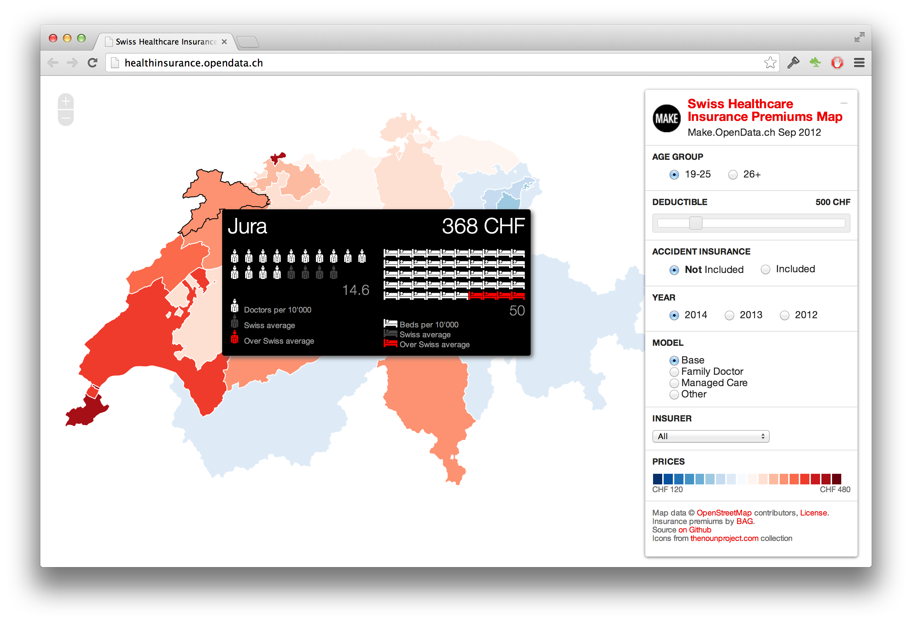
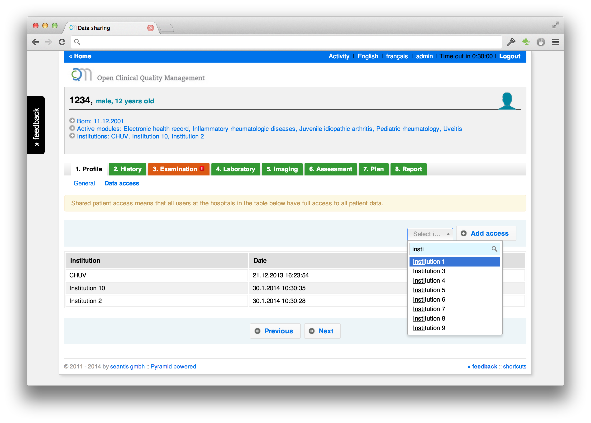

Blog
Einfache Zusammenarbeit: alles hat eine URL
Mit den richtigen Werkzeugen ist die Zusammenarbeit produktiver und macht mehr Spass. Für unsere interne Zusammenarbeit setzen wir auf moderne Tools und ein einfaches Prinzip: alles hat eine URL.
LaTeX und Git für Dokumente
Konzepte (Offerten) schreiben wir in LaTeX (www.latex-project.org). Dokumente sind immer in einem Git Repository versioniert und schliessen ein Changelog ein. Damit können einfach mehrere Personen an einem Konzept schreiben. Nie mehr Microsoft Word!
Trac Projektmanagement-Tool
Für (nicht öffentliche) Projekte wird bei Projektstart das webbasierte Projektmanagement Tool «Trac» (http://trac.edgewall.org) aufgesetzt. Darin werden Tickets erfasst und verantwortlichen Personen zugeordnet. Die Projektmanagerin des Kunden hat jederzeit vollen Zugriff auf das Trac des Projektes. Sie erfasst selbst Tickets und kann Themen «code-nah» mit dem Projektteam diskutieren. Auch die Triage von Issues findet für alle Projektmitglieder transparent im Projektmanagement-Tool statt.
Github für Open Source
Unser Quellcode wird mit der Versionsverwaltung-Software «Git» (www.git- scm.com) verwaltet. Für Open Source Projekt ist unser kompletter Code auf der Kollaborationsplattform «GitHub» verfügbar (www.github.com/seantis).
Continous Integration Server
Für die kontinuierliche Integration und für das Ausführen der automatisierten Tests verwenden wir «Jenkins» (www.jenkins-ci.org) bzw. «Travis» (www.travis-ci.org) für Open Source Projekte. Es ist auf einen Blick erkennbar welches Commit zu einem fehlerhaften Build geführt hat.
Chatrooms
Für die direkte, weniger formale Kommunikation setzen wir auf «HipChat» (www.hipchat.com). Der Projektmanager des Kunden kann jederzeit einfach in den Chatroom des Projektes eingeladen werden. In unseren projekt- und themenspezifischen Chatrooms dürfen auch Bots mitreden: unsere Server (mehr als 30 Root Server) haben sogar ihren eigenen Raum «Server Café - where servers come to chat». Ein Bot für Github meldet Issues direkt in den entsprechenden Raum und Applikationen wie z.B. myControl.aero rufen voller Freude in den Chatraum wenn sich ein neuer User angemeldet hat oder ein Abo verkauft wurde.

Alles hat eine URL
Was verbindet alle diese Tools? Ein einfaches Prinzip: alles hat eine URL.
Konzepte, Tickets, Chats haben alle eine eigene URL. Dies stellt sicher, dass der Zugang für alle Berechtigten jederzeit gewährleistest ist, Inhalte durchsuchbar sind über Links einfach miteinander verknüpft werden können.
Medication Timeline
OCQMS integrates and visualizes time-oriented medication data and combines the data with clinical scores (disease activity scores). The goal is to improve medication reconciliation by providing clinicians with more visual feedback for time-oriented medication data.
More information about OCQMS: www.healthdata.ai

Visualisierung Krankenkassenprämien 2014
Die interaktive Karte mit allen Krankenkassenprämien der Schweiz wurde vor gut einem Jahr am Swiss Open Data Hackday in Basel entwickelt.
Die interaktive Karte ist leider nicht mehr online verfügbar.
Für Entwickler dürfte unser Python Package SHIP interessant sein. Es bietet einfachen Zugriff auf den konsolidierten Prämiensatz des BAGs.
SHIP - Swiss Healthcare Insurance Premiums: https://pypi.python.org/pypi/ship

Shared Access to Medical Records

Permission Levels
- Granting access results in the sharing of all data - not just part of a patients record (e.g. a single visit).
- Access permissions are managed on the patient level.
- Access is granted to an institution and not to a single doctor within a hospital.
Granting access
- Institutions will see all patient data since the inclusion of the patient.
- Visits are not shared between hospitals: to add data a new visit must be opened.
- Any user may be given access permissions.
Revoking Access
- If an access permission is revoked the users in the removed institution will still have access to historic data, but can no longer edit patient information (e.g. opening a new visit).
- All users may revoke granted permissions (e.g. on patient's request).
More information about OCQMS: www.healthdata.ai
Smart Medical Terms Control
For IT professionals medical documentation is a difficult matter. They are trained to approach problem domains using structured data and love forcing users to enter data in a well defined and structured form. Narrow questions with predefined answers are what IT companies will put on your form if you let them.
Doctors know that medical documentation is too complex to force it into a corset of predefined answers. Each case is special, each patient is different. Highly structured data offers a false promise of accuracy and precision.
An application for electronic health records must therefore allow doctors to document their work in their own words.
Doctors write text in an open and technically (!) not very structured way. This doesn’t mean that some parts of a medical file such as medication and lab results are not suited for a more rigid tabular data structure. But they remain the exception to the rule.

Smart Medical Terms Control (SMTC)
OCQMS doesn’t restrict doctors' freedom in documentation tasks. It allows doctors to write in an open-ended form. In addition to predefined questions (checklist) OCQMS offers an extended text box (open text field) on each form. Entering text into this field isn’t any different from using a text processor (e.g. MS Word) for writing medical reports.
The innovation of OCQMS lays in the Smart Medical Term Control (SMTC). SMTC is a new way to enrich free text with standardized medical terms. It is inspired by hashtags «#» known from Twitter and IRC. When typing «#» within an extended text field, the system will suggest standardized terms from a list of medical terms.
The list can include any medical concept. In our prototype we are using the SNOMED CT core problems list. It includes more than 6’000 medical terms. This list is a subset of terms most useful in documenting and encoding clinical information at a summary level, like a problem list, discharge diagnosis or reason of encounter.
SMTC for Reports
On the output side SMTC offers a way to visually «scan» medical reports (discharge summaries) for different dimensions. The SNOMED system of medical terms consists of 19 dimension or axes. In the reports section OCQMS provides a smart filter for the most relevant SNOMED axes:
- Clinical finding
- Procedure
- Situation with explicit context
- Event
We feel that giving doctors the ability to easily enrich unstructured text with metadata is an important approach when designing a medical application. Neither rigid structure nor everything-goes text input are silver bullets. There's a sweet spot to be found somewhere in the middle.
Open Clinical Quality Management System (OCQMS): www.healthdata.ai
About SNOMED CT
«SNOMED CT or SNOMED Clinical Terms is a systematically organized computer processable collection of medical terms providing codes, terms, synonyms and definitions used in clinical documentation and reporting. SNOMED CT is considered to be the most comprehensive, multilingual clinical healthcare terminology in the world.»
http://en.wikipedia.org/wiki/SNOMED_CT